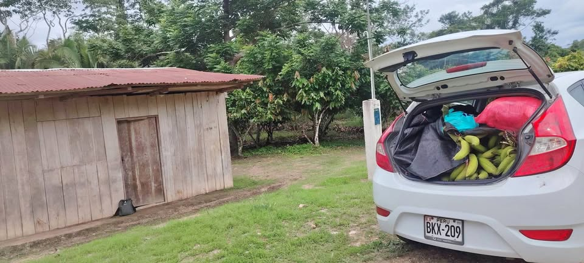

Precio desconocido 10.5 ha

Se Vende terreno de chacra diez y medio hectarias (10.5 ha) TITULO DE PROPIEDAD, Ubicado en JUANJUI sembrio de cacao (3 ha) y naranjas (3 ha) plátano (1 ha) y tierra monte altos CON SERVICIOS BASICOS AGUA Y LUZ cuenta con una quebrada- de JUANJUI a 40km Ref. crusando el Rio huallaga pronto el PUENTE TARATA actualmente construyendo